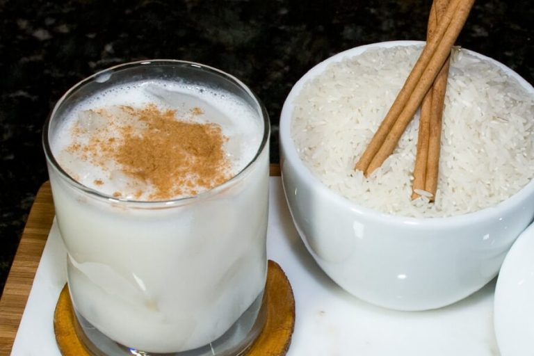

Venezuelan Chicha

Chicha is a classic South American drink that you can find in a lot of countries
Venezuelan Chicha is a drink made from soaking, cooking, blending rice, and adding different kinds of milk.
There are different variations of the chicha throughout Latin America.
Some are made with just water and raw rice, or corn and fermented pineapple, or nuts.
This drink is made from three simple ingredients and takes very little time to make.
In Venezuela it is loved by people of all ages; some like to liven up their chicha by adding condensed milk or cinnamon once it’s ready.
Venezuelan Chicha Ingredients
- White rice
- Cinnamon sticks
- Water
- Salt
- Whole milk
- Condensed milk
- Evaporated milk
- Pure vanilla extract
How To Make Venezuelan Chicha
- Soak the rice: Place rice, cinnamon sticks, and 1 cup of water in a bowl; mix to combine.
Let the rice soak for at least an hour up to overnight.
- Cook:Transfer soaked rice to a medium saucepan. Add 4 cups water and salt; mix to combine.
Cook over medium-low heat for 30-35 minutes, or until the rice is super tender and mushy. Let the cooked rice cool.
- Blend:Once the rice has cooled, place it in a blender.
Add whole milk, evaporated milk, sweetened condensed milk, and vanilla extract; blend until smooth.
- Refrigerate:Transfer to a jar and refrigerate until ready to serve.